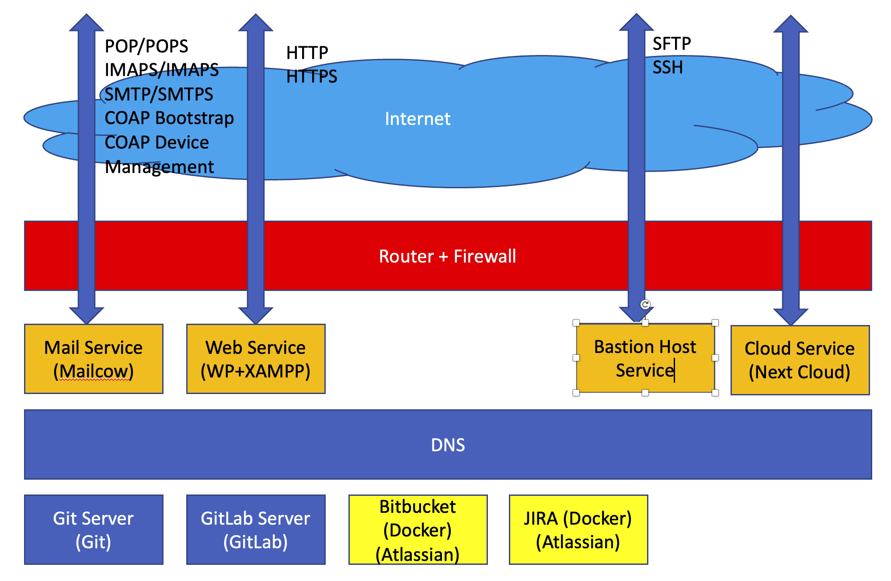

Homelab Skill (draft)
May 17, 2023
[My Home Lab] #
We setup the Development Environment for homelab.

On the internet facing we allow for the following traffic to transport to and from internet:
- Mail - POP/POPS, IMAP/IMAPS, SMTP/SMTPS
- Leshan - Bootstrap and Device Management
- Web - HTTP/HTTPS
- Bastion Host - SSH/SFTP
- Github via SSH and HTTPS
- Next Cloud -TBD
Code Control Service
- Git Server
- GitLab Server
- Bitbuck Server
- JIRA Server
DNS Service
- Bind9
Mail Service
- Mailserver using the mailcow docker
Web Service
- We use Hugo to develop the web service
Study #
Training courses that we have studied and learned in the Github, Linkedin, Udemy, and Youtube;
Youtube #
Bind9 Docker - Real DNS at home Simple Git Server - using RasberryPi GitLb Server using RaspberryPi4 Docker Network is CRAZY!! Docker Networking Tutorial
Linkedin #
Docker for Java Developers by Arun Gupta Completed - Out of Date Kubernetes for Java Developers by Arun Gupta 60 % On Progressed
Udemy #
Docker - Hands on for Java Developers
The objective of the study is to
- Set up the tool set used for the homelab used for the Development, Deployment, Production.
Development Tools #
We use
- For IDE we select to use the Jetbrains suite to develop PoC and Application in
- GoLand for Golang
- WebStorm for NodeJS, NPM and Javascript
- CLion for C/C++
- IntelliJ for Java
- Pycharm for Python
- DataGrip for Database Access to MySQL, Postgresql, DynamoDB etc…
- TeamCity for CI/CD
- Docker
- Kubernetes
- Database
- Mailserver - Mailcow running as a Docker
Development Environment #
For Code Management, we use the following set-ups
- Git Server running on a RaspberryPi4/4G and ubuntu 22.10 server
- GitLab Server running on a RapberryPi4/8G and ubuntu 22.10 server
- I also run GitHub used to share the findings to the community For DNS, we run bind9 docker and configure all server(s) resolv.conf to use the DNS Name Server